The plates
See the scene at the exact verse.
There are 235 plates, and each one appears at the verse of the scene it depicts. You read Matthew 14 and see Peter sinking in the storm, right there, next to the text.
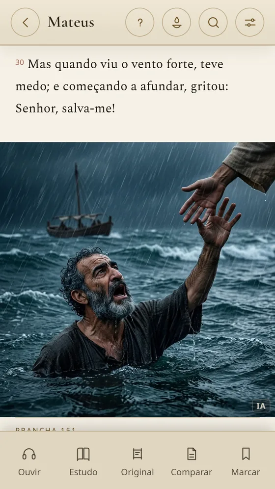
Illustrated Holy Bible
The complete Bible, offline and ad-free, illustrated with 235 plates, each one at the exact verse of its scene.
Free to read · extra editions as a one-time purchase, no subscription · in 9 languages

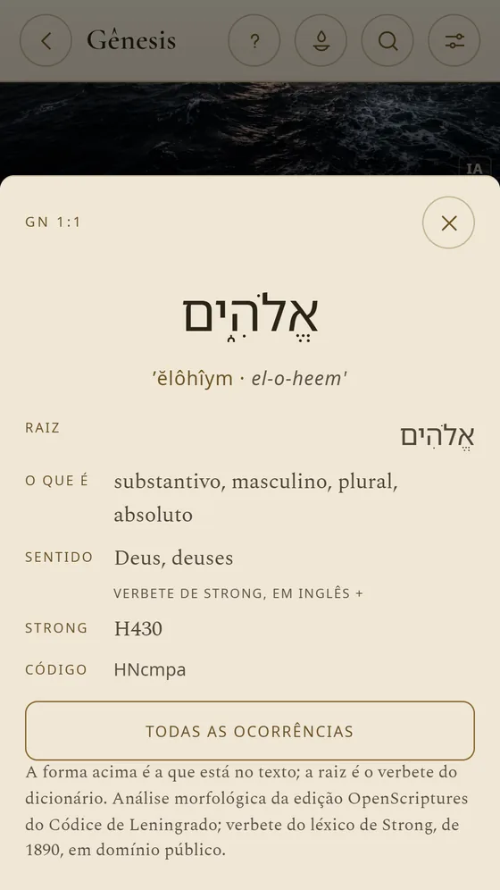
The Bible to read, see, hear and study — from the first verse to the original Hebrew and Greek.
The plates
There are 235 plates, and each one appears at the verse of the scene it depicts. You read Matthew 14 and see Peter sinking in the storm, right there, next to the text.

The note on each scene
Every plate comes with a note on the basis of the drawing: the verse, the excavation, the ancient text. Where research does not support a detail, the note says so too.
The gallery
Browse the Bible through its images, book by book, and through the gallery of characters. Tap a scene and Siloé opens the passage.
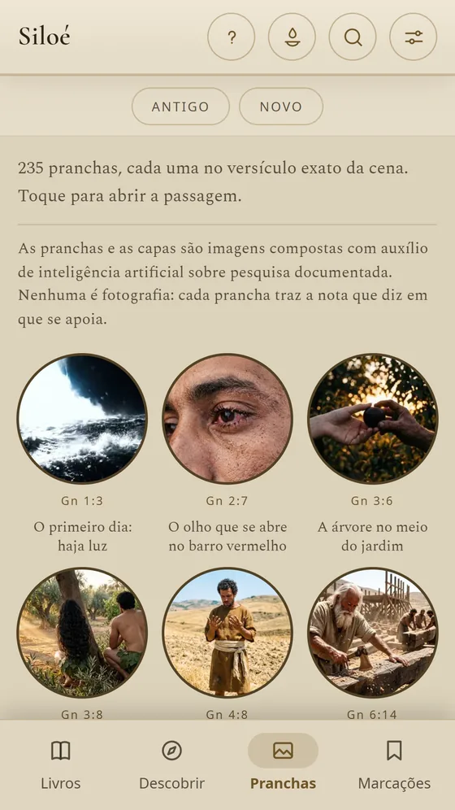
The study Bible
Historical context, discussion questions, curiosities and links to other passages, chapter by chapter. And a guide for your group or small group, which you put together and take as a PDF.
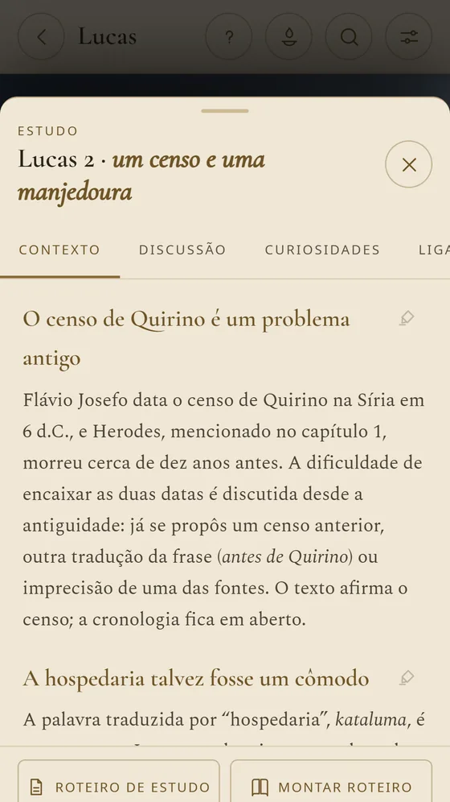
Hebrew and Greek
As in an interlinear Bible: the reading and meaning of each word, the root, the morphology and the Strong's number. In the Researcher edition, the concordance shows every occurrence of each word, book by book.
The translation
In Portuguese, the text is the Bíblia Livre, a Brazilian translation made from public-domain texts — the Almeida of 1819 and 1911, the Greek of Scrivener and Nestle and the Leningrad Codex — in traditional and critical forms. Each language has its own public-domain or openly licensed translation.
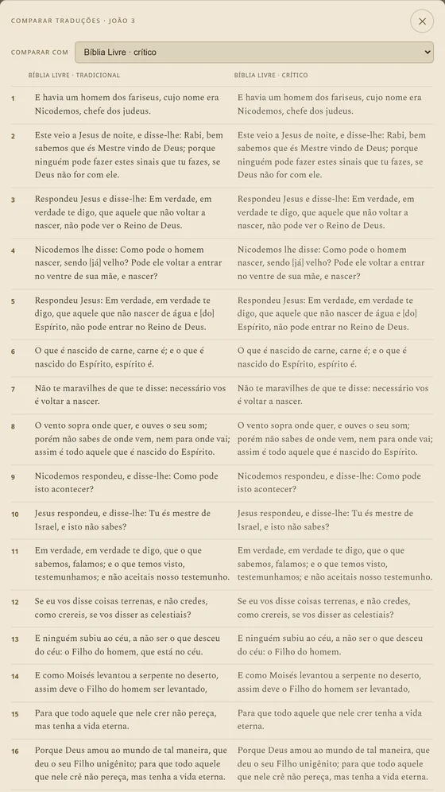
Listen to the Bible
Siloé reads the chapter with your phone's voice and highlights the verse being read. It is synthetic narration, not a recorded narrator — and it works offline.
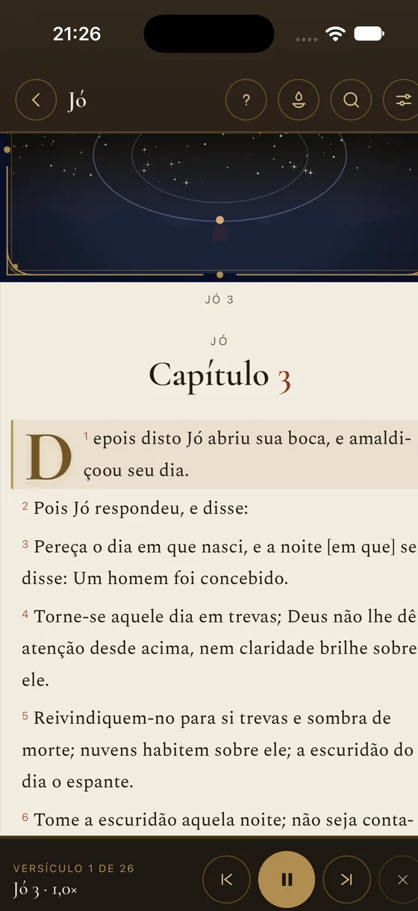
The Word of the day
The Word of the day comes with a note that tells who said it, where and when. Choose by theme — anxiety, fear, grief — and share it as a card.
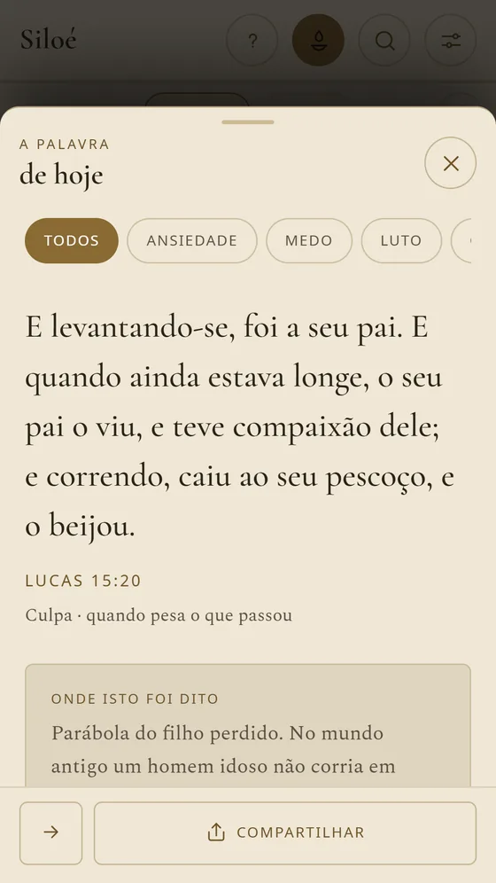
Reading plans
From «Start here» to the Bible in a year, with a daily reminder. The Gospel of John in 21 days, Psalms for hard days, a proverb a day.
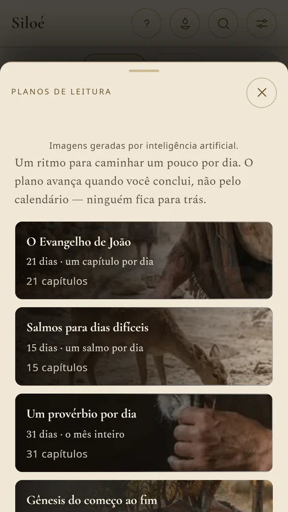
On iPad
On iPad, the plates get room to breathe and reading feels as comfortable as a book. Highlights, notes and collections in five colors, all kept on your device.
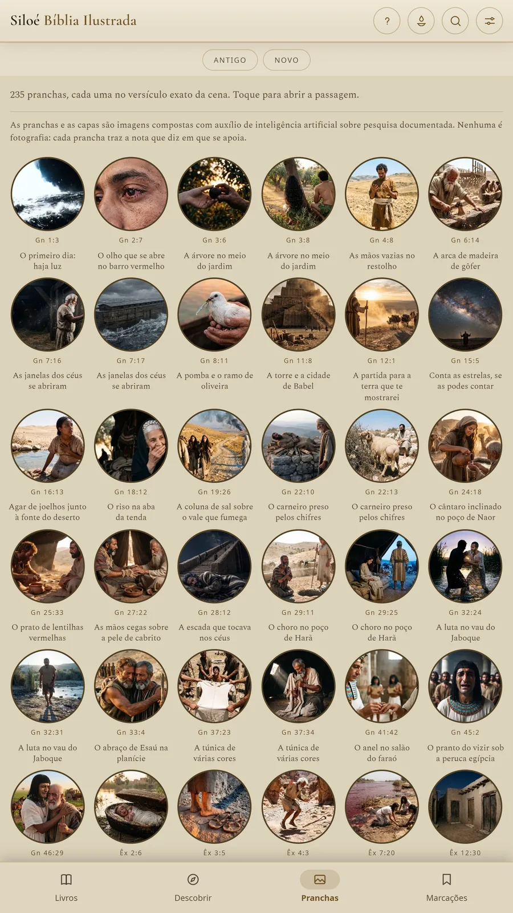
The Free edition never expires. Illustrated, Complete and Researcher are one-time purchases, with no subscription: each includes everything the previous one has, and upgrading costs only the difference.
The app's screens, as they appear on the App Store.

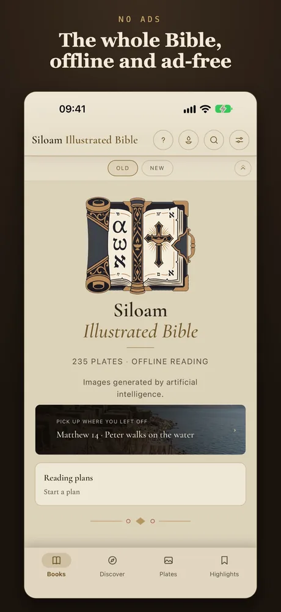
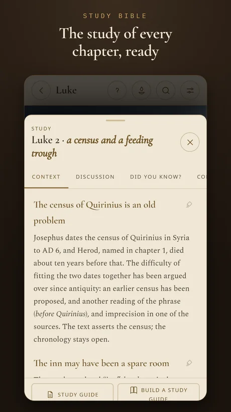
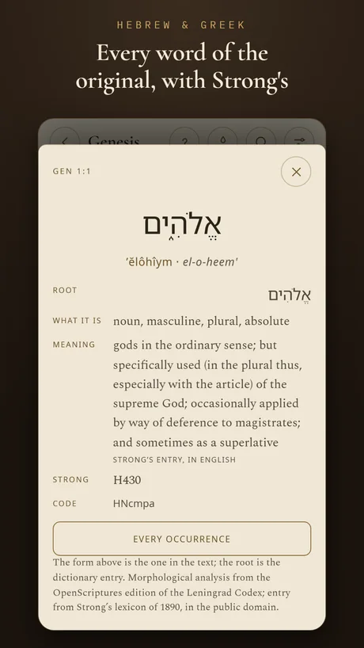
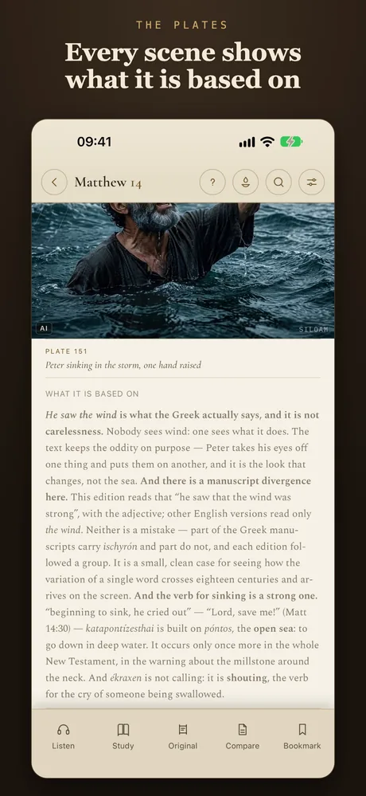
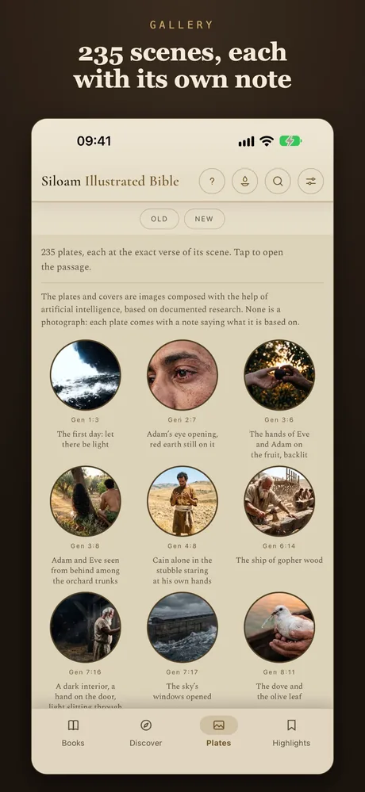
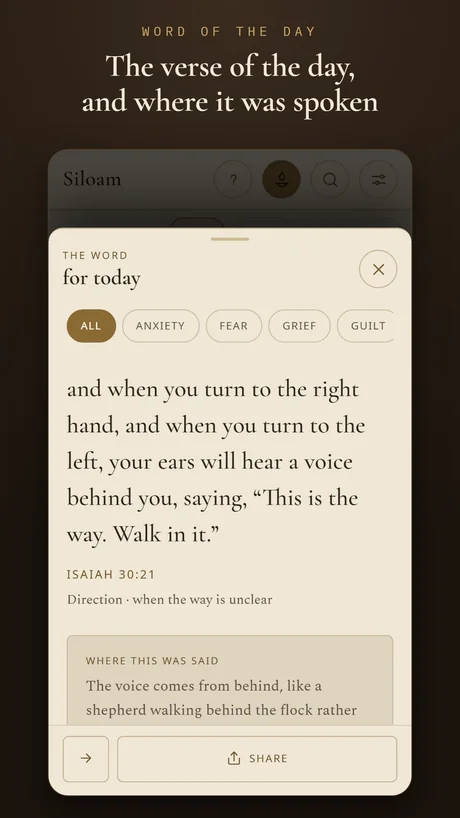
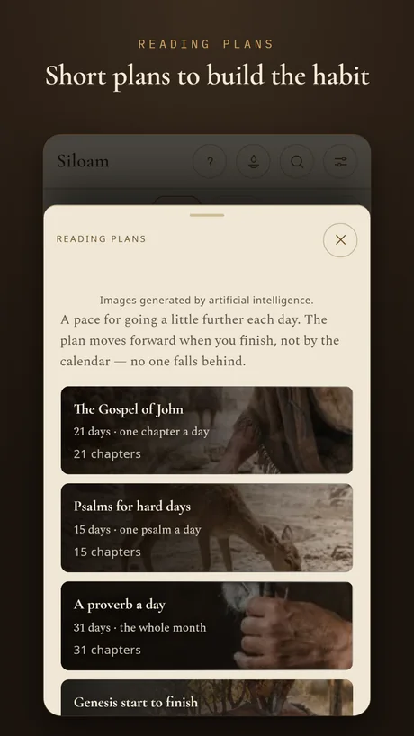
Your highlights, your notes and what you have read stay on the device; nothing goes to any server of ours. The app asks for no account and shows no ads.
Yes. The Free edition has the whole Bible and never expires. Illustrated, Complete and Researcher are one-time purchases, with no subscription; upgrading costs only the difference.
Yes. On iPhone and iPad the text comes inside the app. The internet is only used when you buy an edition or open a link from the notes.
In Portuguese, the Bíblia Livre, a Brazilian translation made from public-domain texts — Almeida of 1819 and 1911, the Greek of Scrivener and Nestle and the Leningrad Codex — in traditional and critical forms. In every other language, a public-domain or openly licensed translation.
No. Siloé has the Protestant canon; the deuterocanonical books and the Greek additions to Esther and Daniel are not in this edition.
In 9: Brazilian and European Portuguese, English, Spanish, French, Italian, German, Ukrainian and Korean — the Bible and the app's menus. In each language, a public-domain or openly licensed translation.
No. They are images composed with the help of artificial intelligence on documented research, and each one comes with the note that says what it is based on. The biblical text does not go through artificial intelligence.
Another question? Write to contato@outcomeanalytics.com.br.
Download for free and carry the whole Bible in your pocket.